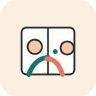
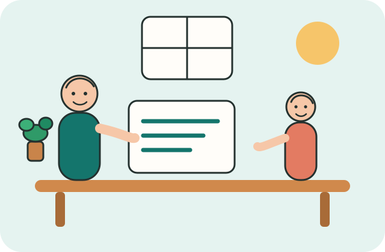
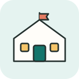
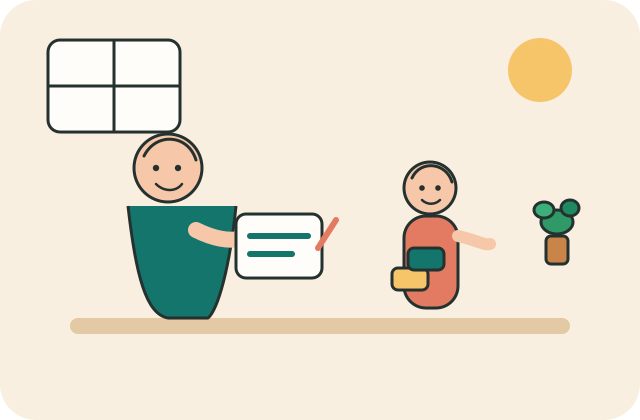
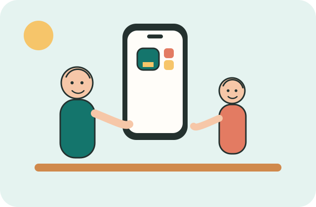
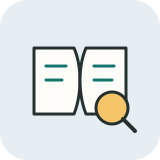
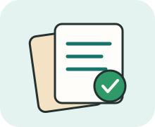
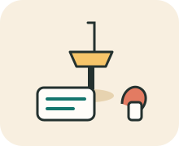

香港，現在可以問
教育局通函、社會福利署的支援中心名單，以及協康會、香港耀能協會、新生精神康復會「朗程牽」、循道衛理楊震社會服務處、救世軍 PATH 的官方頁。
給家長
每則都有日期和原文。香港的事情會寫可以問誰。其他地方的文獻譯成中文，並寫明家裡現在用不用做。
想知道孩子有沒有需要留意的困難？ 做 5 分鐘初步篩檢 或打開 家長工具 （答案不會傳走）。


香港的政策和服務。點一則，就看到可以問誰。

初步篩檢
25 題，約 5 分鐘

家長工具
記觀察、問邊個、屋企可以點做
研究也排在這裡。看完不用在家跟著做。
這個分類還沒有資料。

同一個 Julius Sin：最新資訊、初步篩檢，以及原來的 Julius 家長工具。 加到主畫面之後，看起來就像 APP。答案只留在你這部機。
Android：用 Chrome 打開這頁，按「下載到手機」。 iPhone：用 Safari 打開，按底部分享，再選「加入主畫面」。
只收打得開、核對過的原文。摘要是我們寫的，不轉載全文。

教育局通函、社會福利署的支援中心名單，以及協康會、香港耀能協會、新生精神康復會「朗程牽」、循道衛理楊震社會服務處、救世軍 PATH 的官方頁。

官方文件、機構新聞稿，以及可打開的論文。世界衛生組織和各地衛生、教育部門都在這列。

商業招生、賣療程的文章不單獨收。出處核對不到的文獻不收。

Julius Sin 把公開的自閉症資料整理給家長看。研究會標明仍是研究。政策和服務會寫下一步可以問誰。 同一頁也有原來的 Julius 家長工具，可以加到手機主畫面。
這裡不取代醫生、學校或評估，也不公開任何孩子的個人資料。
本頁整理日期：2026年10月18日。